北京大学
戏剧研究所Peking University
Institute of Theatre
2005年，由林兆华倡议并参与创建的北京大学戏剧研究所，将戏剧实践、教育、国际交流与学术讨论放在同一框架中。Founded in 2005 through an initiative involving Lin Zhaohua, the Peking University Institute of Theatre connected theatre practice, education, international exchange and scholarly discussion.
Founded in 2005 through an initiative involving Lin Zhaohua, the Peking University Institute of Theatre connected theatre practice, education, international exchange and scholarly discussion.
2005
北京大学新闻网4月12日报道：北大戏剧研究所正式成立，由林兆华担任所长，并由北京大学艺术系与林兆华戏剧工作室联合成建。A 12 April 2005 PKU News report announced the formal establishment of the Institute, with Lin Zhaohua as director and the Institute jointly formed by PKU’s Department of Arts and the Lin Zhaohua Theatre Studio.
研究所方向以戏剧舞台艺术实践为主，侧重导演、表演与戏剧文学。Its focus was theatrical stage practice, with an emphasis on directing, acting and dramatic literature.
实践型戏剧教育Practice-based Theatre Education
北大同期资料提出，将理论教学融入戏剧实践，教学过程与艺术实践同步；同时通过国际大师工作坊、论坛和实践课程探索新的戏剧美学与本土化教学模式。Contemporary PKU materials proposed integrating theoretical teaching with theatre practice, with teaching and artistic practice developing together through international master workshops, forums and practice-based courses.
Jacques Lassalle 大师工作坊Jacques Lassalle Master Workshop
法兰西喜剧院原艺术总监雅克·拉萨勒为学生排演马里沃《爱情游戏与巧合》。Former artistic director of the Comédie-Française Jacques Lassalle staged Marivaux’s The Game of Love and Chance with students.
Richard Schechner 讲学Richard Schechner Lecture
理查·谢克纳受邀在北大讲学，讨论表演、媒体与戏剧教育。Richard Schechner was invited to lecture at PKU on performance, media and theatre education.
戏剧论坛Theatre Forum
中国、法国、美国的戏剧教育与实践界人士在北大讨论戏剧教育与创作。Theatre educators and practitioners from China, France and the United States discussed theatre education and creation at PKU.
国际工作坊计划International Workshop Programme
北大公开报道还记录了 Thomas Ostermeier、法国夏日风戏剧节、Theatre O 等后续工作坊计划。PKU reports also recorded planned workshops involving Thomas Ostermeier, La Mousson d’été and Theatre O.
原站图片Original Site Images
以下图片来自你提供的北大戏剧研究所网站备份；文件保持原始素材，不将后补图片冒充历史原图。These images come from the supplied backup of the PKU Institute of Theatre website; the original files are retained and later additions are not presented as historical originals.
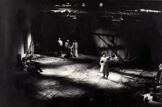
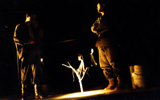
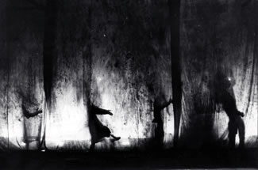
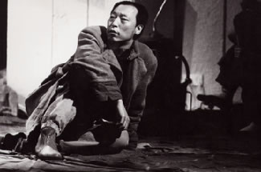
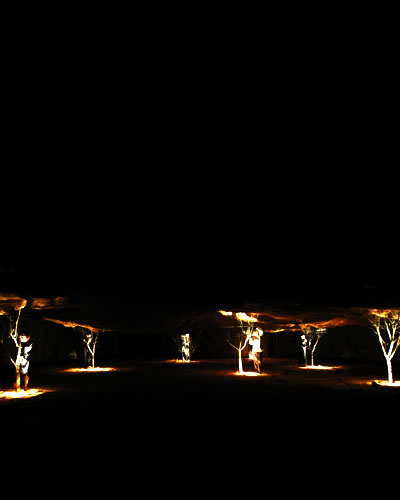
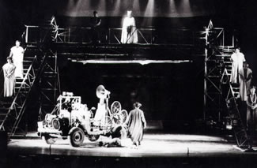
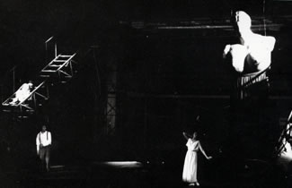
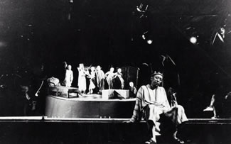
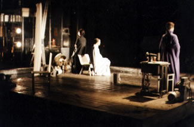
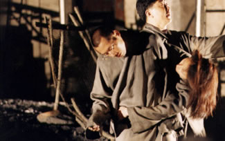
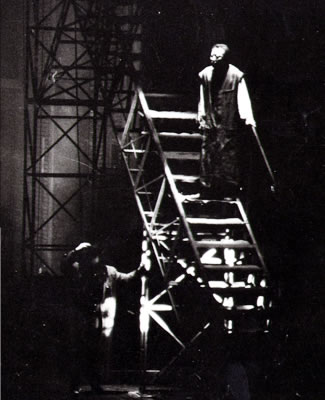
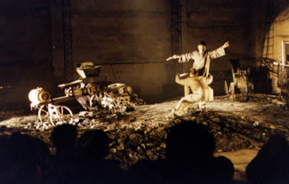
研究所正式成立、机构关系与方向Institute established; institutional relationship and focus
打开来源Open source